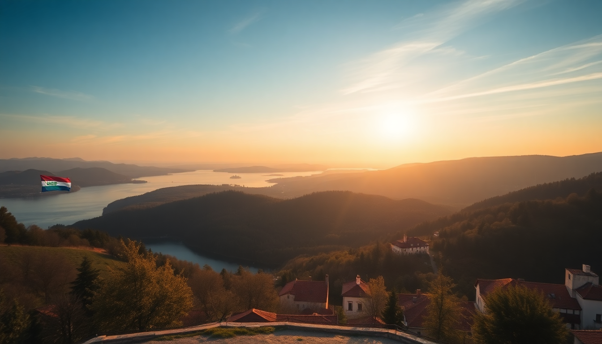

Best Day Trips from Zagreb: Plitvice, Trakošćan & Samobor

I spent a week based in Zagreb, and honestly, the city itself is a solid two-day stop. The real payoff came from the day trips. Plitvice Lakes is the obvious big hitter, but Trakošćan Castle and Samobor each offered something completely different — and all three are doable as a single long day if you’re aggressive, or better yet, spread over two or three. Here’s exactly how I did each one, what I’d do differently, and where I’d put my money.
How do I get to Plitvice Lakes from Zagreb and is it worth the early start?
Yes, it’s worth it. But you need to leave early. I caught the 6:30 AM bus from Zagreb Bus Station (Autobusni kolodvor Zagreb) — the ride takes about two hours and fifteen minutes. The bus drops you right at Entrance 1, which is the lower lakes. I’d recommend getting off at Entrance 2 instead if you want to avoid the initial crowd crush at the boardwalks. The bus continues to Entrance 2 after a short stop at Entrance 1, so just stay on.
I used a guided tour once — booked through GetYourGuide — and it worked fine, but the bus-and-walk option gave me more freedom. The guided tour shuttles you in a minibus and includes a timed entry ticket, which is useful because Plitvice limits daily visitors. If you go solo, book your ticket online at least a week ahead in peak season (June–September). I didn’t, and I ended up waiting 45 minutes at the ticket booth.
- Best route: Start at Entrance 2, take the shuttle bus to the upper lakes, walk down to the big waterfall (Veliki Slap), then take the boat across Kozjak Lake back to Entrance 2.
- Time needed: 4–5 hours for the main loop. Add another hour if you want to hike up to the viewpoint above the lower lakes.
- What to bring: Water shoes (the boardwalks get slippery), a rain jacket (it rains even in July), and cash for the overpriced coffee at the lakeside kiosk.
- Avoid: The electric boat ride is included in the ticket — use it. The walking path around Kozjak Lake is long and boring.
Is Trakošćan Castle worth the drive from Zagreb?
Trakošćan is smaller and quieter than Plitvice, but it’s a better half-day trip if you want something low-effort. I drove — about 45 minutes from Zagreb city center — but there’s also a direct bus from Zagreb’s Črnomerec terminal that takes about an hour. The castle sits on a hill above a man-made lake, and the whole compound feels like a medieval theme park without the crowds.
The castle interior is a museum of 19th-century aristocratic life — furniture, weapons, portraits. It’s not spectacular, but the grounds are. I spent most of my time walking the loop trail around the lake (about 3 km, flat, shaded). There’s a small café near the castle entrance that does decent coffee and a surprisingly good slice of kremsnita (custard slice).
- Getting there: Car is easiest. Bus from Črnomerec runs roughly hourly; check Autobusni kolodvor Zagreb website for the schedule.
- Entry fee: Around €10 for the castle museum. The grounds are free.
- Food: The café at the castle is fine. Better option: drive 10 minutes to Restaurant Dvorac Trakošćan (yes, same name, different location) for grilled meats and a view of the valley.
- Pro tip: Go on a weekday. On weekends, local families pack the picnic area by the lake.
What’s the best way to spend a day in Samobor?
Samobor is the easiest day trip from Zagreb — 30 minutes by bus from Črnomerec terminal, or 20 minutes by car. It’s a small town with a cobblestone main square, a ruined castle on a hill, and a reputation for kremšnita (the local custard cake). I went on a Saturday and the main square was lively with a small farmers’ market.
Start at Trg kralja Tomislava, the main square. Grab a kremšnita from Kavana Livadić — it’s the original, and it’s better than the ones in Zagreb. Then walk up to Stari Grad Samobor, the castle ruins. It’s a 20-minute uphill walk, steep in parts, but the view over the town and the Sava River valley is worth it. The castle itself is mostly walls and a tower, but you can climb the tower for a small fee.
- Lunch: Restaurant Gabreku 1929 serves traditional Samobor-style grilled pork and štrukli (baked cheese pastry). The portions are huge.
- Drinks: Kavana Central on the square does a good espresso and has outdoor seating.
- Walking route: Square → castle → downhill through the old town → riverside path along the Gradna River → back to square. Total: 2 hours easy.
- Avoid: The tourist-trap “Samobor cake” stalls near the bus stop. Walk to Livadić.
When is the best time of year for these day trips?
I did all three in early September, and the weather was perfect — 22°C, sunny, no rain. Plitvice was still busy but manageable. Trakošćan was nearly empty. Samobor was buzzing with the weekend market.
- Plitvice: May–June and September–October are best. July–August is a zoo. November–March the waterfalls are less impressive, but the crowds are gone.
- Trakošćan: April–October. The lake trail is muddy in winter. The castle is open year-round but the café closes in November.
- Samobor: Any time. The kremšnita is always good. Summer has outdoor seating; winter has the Christmas market on the square.
Can I do all three in one day?
Technically yes, but I wouldn’t. I tried a “Plitvice morning, Trakošćan afternoon” combo and it felt rushed. Plitvice needs four hours minimum, plus two hours of bus time each way. That’s eight hours gone. Adding Trakošćan means another two hours of driving and an hour at the castle. You’ll be back in Zagreb by 8 PM, exhausted.
If you have only one day, pick Plitvice. If you have two days, do Plitvice on day one and Samobor + Trakošćan on day two (Samobor in the morning, Trakošćan after lunch, back by dinner). That’s the sweet spot.
- One-day option: Plitvice only. Book the 6:30 AM bus, return bus at 4 PM.
- Two-day option: Day 1: Plitvice. Day 2: Samobor (9 AM–1 PM) → drive to Trakošćan (30 min) → castle (2–4 PM) → drive back.
- What I’d skip: The guided tour for Plitvice. It’s not bad, but the bus-and-walk method is cheaper and more flexible.
FAQ
How much does the bus from Zagreb to Plitvice cost? Around €15 one-way from Autobusni kolodvor Zagreb. The ticket counter accepts cards, but the driver on the return trip might only take cash. I’d keep €20 in kuna or euros just in case.
Is Samobor walkable from the bus stop? Yes. The bus stop is a five-minute walk from Trg kralja Tomislava. Just follow the main road downhill. You’ll hit the square before you know it.
Can I visit Trakošćan Castle without a car? Yes. The bus from Črnomerec terminal drops you at the village of Trakošćan, then it’s a 10-minute walk uphill to the castle. The bus runs about once an hour, so check the return schedule before you head up.
Conclusion
- Plitvice is a full-day commitment — leave by 6:30 AM, book tickets online, and skip the guided tour.
- Trakošćan is a relaxed half-day with a castle, a lake loop, and decent cake — best with a car.
- Samobor is the easiest: 30 minutes from Zagreb, good food, a quick castle hike, and the best kremšnita in the region.
- Spread these over two days if you can. One day for Plitvice, one day for Samobor + Trakošćan.
- Early September is the ideal window — warm, uncrowded, and everything is open.